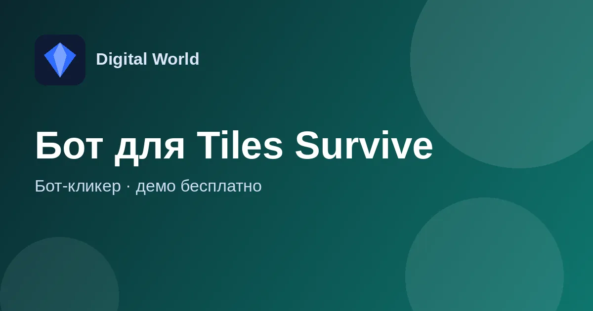

Бот-кликер для Tiles Survive
Помощник для Tiles Survive, который берёт на себя ежедневную рутину: рудник, госпиталь, помощь гильдии и сбор наград — пока вы занимаетесь своими делами.

Что это за бот
Бот-кликер для Tiles Survive выполняет повторяющиеся действия в игре: следит за рудником, лечит войска, нажимает помощь союзникам и собирает всё, что накапливается в городе.
Каждую функцию можно включить отдельно и настроить: например, время пересадки на рудник или по сколько бойцов лечить за раз.
Функции бота для Tiles Survive
Рудник под щитом
Выбираете, через сколько минут пересаживаться на рудник (например, около 28 минут), — и добыча идёт под защитой щита.
Лечение
Жмёт значок над госпиталем и лечит бойцов партиями нужного размера (например, по 2000). Запрашивает помощь гильдии на лечение.
Помощь гильдии
Нажимает «помочь» раз в несколько минут в случайный момент; в журнале видно, когда будет следующее нажатие.
Конверты и книжки
Собирает конверт над «Постом разведки» и книжки над «Академией героев».
Зал наград
Периодически забирает награды за походы (красный значок внизу слева).
Выносливость и приключения
Собирает бесплатную «выносливость шефа», когда она появляется, и забирает ящик приключения в «Приключениях героев».
Как скачать и запустить
- Откройте тему бота во ВКонтакте и скачайте архив по ссылке из первого сообщения.
- Распакуйте архив (пароль 1234) в любую папку.
- Запустите игру и бота, выставьте настройки и нажмите старт.
Демо-версия и продление
Первые 3 дня бот работает в демо-режиме бесплатно. Чтобы пользоваться дальше, продлите ключ на любое количество дней через кнопку «Продлить» в самом боте.
Частые вопросы
Сколько стоит попробовать?
Демо-версия бесплатна — 3 дня. Пароль на архив — 1234.
Можно включить только часть функций?
Да, каждая функция включается и настраивается отдельно.
Бот зависает или не запускается — что делать?
Чаще всего мешают блокировки в интернете. Попробуйте запустить бота через VPN; не каждый VPN помогает — если не вышло, попробуйте другой или другие настройки.
Где задать вопрос?
В теме бота во ВКонтакте — там же новости и обновления — или разработчику в Telegram.